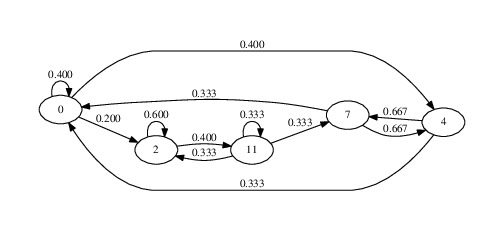

*** Consider that the local features have the format \((M, N)\), where \(M\) is the number of frames and \(N\) is the dimension of each local feature. ***
Single Gaussian
basic_stats_1
\([\mu_{1}, \mu_{2}, ... , \mu_{N}, \sigma_{1}, \sigma_{2}, ... , \sigma_{N}]\)
basic_stats_2
\([\mu_{1}, ... , \mu_{N}, \sigma_{1}, ... , \sigma_{N}, min_1, ... , min_N, max_1, ... , max_N]\)
diff_stats_1
\([\mu_{1}, ... , \mu_{N}, \sigma_{1}, ... , \sigma_{N}, \mu_{diff_{1}}, ... , \mu_{diff_{N}}, \sigma_{diff_{1}}, ... , \sigma_{diff_{N}}]\)
diff_stats_2
\([\mu_{1}, ... , \mu_{N}, \sigma_{1}, ... , \sigma_{N}, min_1, ... , min_N, max_1, ... , max_N, \mu_{diff_{1}}, ... , \mu_{diff_{N}}, \sigma_{diff_{1}}, ... , \sigma_{diff_{N}}, min_{diff_{1}}, ... , min_{diff_{N}}, max_{diff_{1}}, ... , max_{diff_{N}}]\)
vector_quantization
\(N\) means + \(N\) variances + \(\frac{N(N-1)}{2}\) covariances
Gaussian Mixture Model with \(K\) components
\((K, N)\) mean matrix + \((K, N, N)\) covariance tensor + \(K\) weight vector (all flattened and concatenated to form a single vector)
Octave Abstraction
\(octave\_abstraction(i) = pitch(i) \% 12\)
Interval Abstraction
\(interval\_abstraction(i) = pitch(i+1) - pitch(i)\)
3-level Pitch Contour
\(pc_{3\_levels}(i) = \begin{cases}
'u', pitch(i) > pitch(i-1) \\
'd', pitch(i) < pitch(i-1) \\
'r', otherwise.
\end{cases}\)
5-level Pitch Contour
\(p_{5\_levels}(i) = \begin{cases}
'U', pitch(i) > pitch(i-2) \\
'D', pitch(i) < pitch(i-2) \\
\begin{cases}
'u', pitch(i) > pitch(i-1) \\
'd', pitch(i) < pitch(i-1) \\
'r', pitch(i) = pitch(i-1)
\end{cases}, pitch(i) = pitch(i-2)
\end{cases}\)
Markov Chain

Vector Quantization with k-means